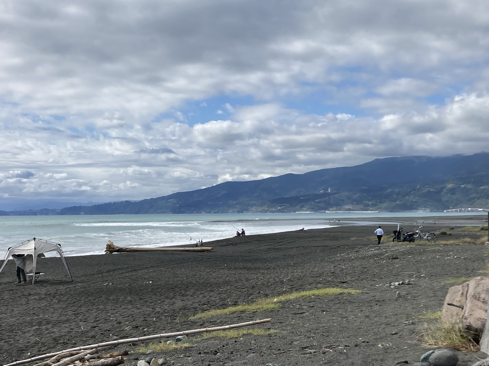
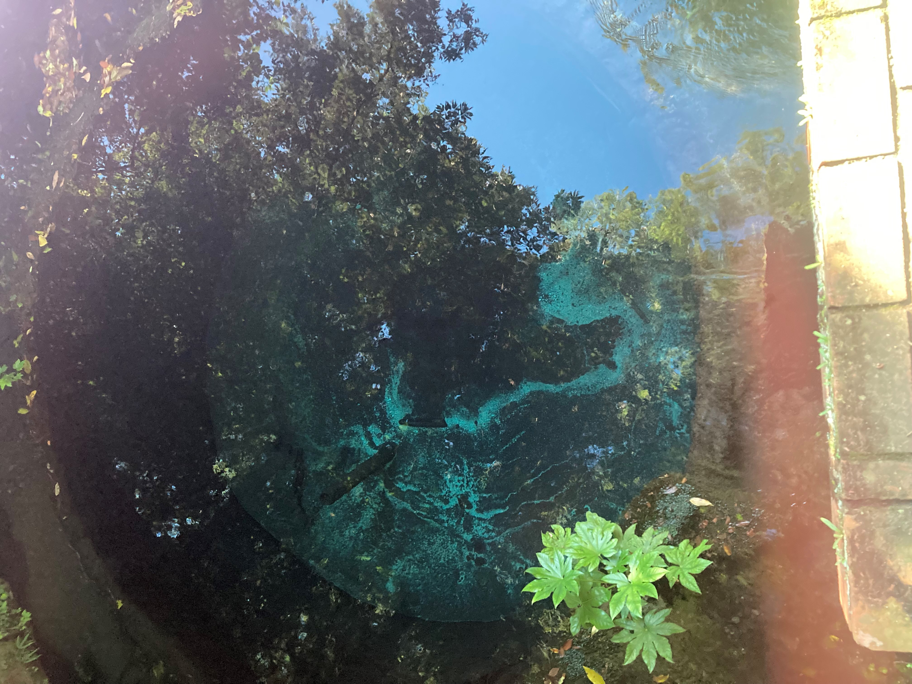
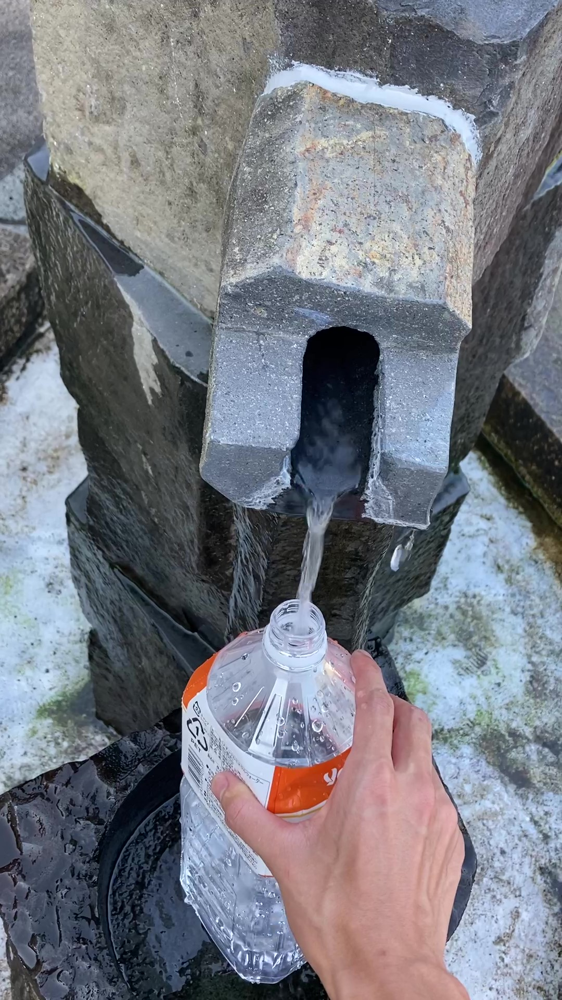

無職の備忘録
無職 22歳 秋 己の肉体と武術に限界を感じ、悩みに悩みぬいた結果私がたどり着いた結果は、旅であった。
本日は朝一からショアジギング。40g程度のジグや鉄板バイブレーションを投げていきます。
反応なし。ベイトすらいる気配がない… サーフの釣りってどうやったらうまくなるんだろう。しかもライントラブルが原因でIP-26をロストしてしまった。
気を取り直して本日も移動スタート。今日はまず芦ノ湖のほとりの箱根神社に向かいます。ボロボロ軽自動車で箱根峠を登っていく。
あれ、スピードが出ない…
普段はミニバンに乗っているので加速に困ることはないが、今は違う。べた踏みしても30km/hがやっと。箱根恐るべし。
そんなこんなで箱根神社到着。芦ノ湖ははじめて来たので、遠くに見える遊覧船に少し感動。

箱根神社の長い階段を登って本殿みたいなところに到着。ご縁があるようにと5円玉をぶん投げてお参り完了。本殿の所で写真取るのは失礼かなと思ったので、階段を降りてから パシャリ

その後、山道を下って三島の市街地の方に向かう。静岡にとかに店舗を多く持つ釣具屋、「釣り具のイシグロ」に立ち寄りました。コアマンのIPが欲しかったのですが、売っていませんでした。 静岡はサーフが多いせいか、鉄板バイブレーションの品揃えは少ない傾向にあるっぽい。その代わり、フラットフィッシュ系のルアーが多い。
そのまま今日の車中泊ポイントへ向かおうと地図を開いてみるとすぐ近くに柿田川公園という大き目な公園があるのを発見。せっかくなので立ち寄ってみることに。 この公園は柿田川の最上流部で、富士山とかからの湧き水がわいているらしい。第二展望台に行くと、水の中に井戸があるようなやつを発見。めっちゃ青い。
その後、駐車場に戻ってくると湧き水汲み場を発見。富士山のおいしい湧き水を手に入れました。正直味の違いは全くわからんが、水道水よりは格段においしい。乞食のように2L ほどいただいてきました。
その後は川の駅伊豆ゲートウェイ函南に移動して車中泊。車中泊2泊目ともなれば慣れたもん。朝までぐっすりでした。
ちなみにシャワーを浴びに人生初快活クラブにいてきました。あそこはこの世の楽園や。